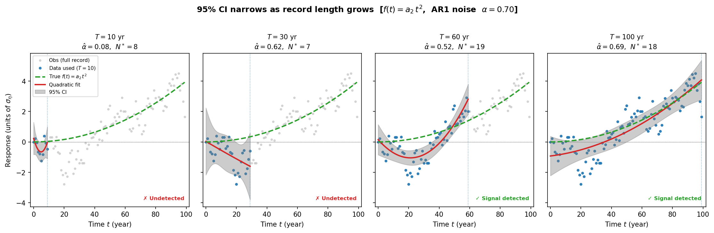
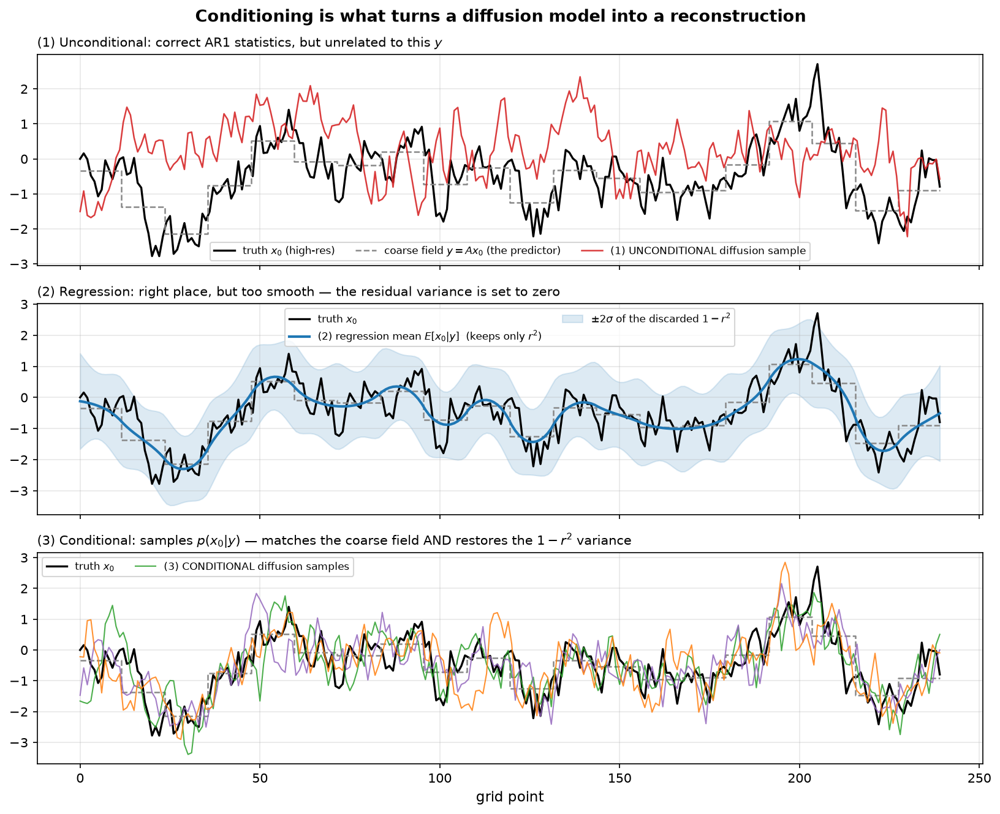
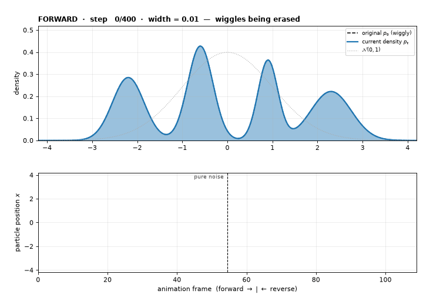
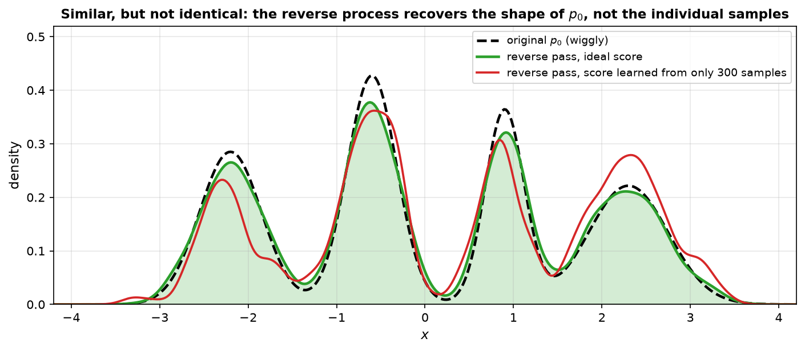

Week 5-8: Regression & AR1#
Linear Regression#
In linear regression, the goal is to determine
the linear fit of \(X\) and \(Y\) (the regression coefficient)
the robustness of the fit (the correlation coefficient)
Regression is simple but powerful, however, this also makes it easily misused. In a sense, the entire class (EOFs; Fourier analysis) is all based on regression.
How do we find the slope and y-intercept of the line that best fits the observed data? Let’s assume \(x(t)\) and \(y(t)\) are time series sampled at \(N\) time steps (so that each point represents a time step).
First, we have to define what “best-fit” means. For now, we will use the conventional definition which means that we want to reduce the sum of the squared errors of \(y\).
Using the method of least squares:
where
\(\hat{y}(t)\) denotes the estimate of \(y(t)\) based on the linear relationship with \(x(t)\)
\(a_1\) denotes the slope, a.k.a. the regression coefficient
\(a_0\) denotes the y-intercept
Define the error of the fit as the sum of squares of the \(y(\text{estimate}) - y(\text{actual})\):
where the subscript \(i\) denotes the time step.
The error is squared so that
the error is positive definite (don’t want positive and negative errors canceling out)
the minimization of \(Q\) (the derivative of \(Q\)) is a linear problem
Note: the square causes larger errors to be more heavily weighted.
We now follow steps from our college Calculus I course and find the \(a_1\) and \(a_0\) that minimize \(Q\) (sometimes called the cost function):
Divide through by \(N\) and move the \(y\) terms to the left-hand side, where overbars denote the mean and primes denote departures from the mean:
Two equations, two unknowns. The solutions are:
Note that,
Hence,
\(a_1\) (regression coefficient / slope):
slope of the best-fit line
equal to the covariance of \(x\) and \(y\) divided by the variance of \(x\)
\(a_0\) (y-intercept):
note that if the means of the time series are 0 (they are anomalies), then \(a_0 = 0\)
One can put confidence limits on the slope \(a_1\) in a number of ways. For example, a jackknife approach can be used to determine the sensitivity to removing a single point. Alternatively, the standard error \(\sigma_{a_1}\) of the slope is given by
where we assume that \(x\) is known exactly. Intuitively, this is the error in our \(y\) estimate divided by the variance in our \(x\) values.
The confidence interval for the true slope \(b\) is then:
The \(N-2\) comes from the fact that two degrees of freedom were used to estimate \(a_1\) and \(a_0\).
How good is the fit?#
How much we “believe” the regression coefficient (\(a_1\)) depends on the spread of the dots about the best-fit line. If the dots are closely packed about the regression line, then the fit is good. The spread of the dots is given by the correlation coefficient \(r\).
By definition, the total variance of \(y(t)\) is \(\frac{1}{N}\sum_{i=1}^{N}(y_i - \overline{y})^2\), and the total variance of the fit \(\hat{y}(t)\) is \(\frac{1}{N}\sum_{i=1}^{N}(\hat{y}_i - \overline{y})^2\), where we use the fact that \(\overline{\hat{y}} = a_1\overline{x} + a_0 = \overline{y}\).
The percent of the total variance in \(y(t)\) explained by the fit \(\hat{y}(t)\):
Hence:
where \(\sigma_x = (\overline{x'^2})^{1/2}\).
\(r^2\) is the fraction of variance explained by the linear least-squares fit; it always lies between 0 and 1
\(r\) varies between \(-1\) and \(1\)
Relationships between \(r\) and \(r^2\):
\(r\) |
\(r^2\) |
|---|---|
0.99 |
0.98 |
0.90 |
0.81 |
0.70 |
0.49 |
0.50 |
0.25 |
0.25 |
0.06 |
Relationship between the slope and the correlation coefficient#
Since \(a_1 = \overline{x'y'}/\overline{x'^2}\), it follows that:
the regression coefficient can be thought of as the correlation coefficient multiplied by the ratio of the standard deviations of \(y\) and \(x\)
regression coefficients give information about the correlation coefficient and the relative amplitudes of variations of \(y\) and \(x\)
in the special case where \(x\) and \(y\) are standardized, the correlation coefficient and the regression coefficient are equal
General comments on linear regression#
only works for linear relationships
does not reveal relationships that are lagged or out of phase
need to be careful about estimating the true sample size (more on this later)
correlation does NOT reveal cause and effect
flipping \(x\) and \(y\) will not give the same results — it is very important to physically justify your choice of \(x\) and \(y\)!
Orthogonal Least Squares Regression#
If you can’t justify which of your data is dependent and which is independent, orthogonal least squares may actually be what you want. In this case, you minimize the orthogonal (perpendicular) distances to the fit line, rather than the vertical distances.
Figure / in-class demonstration
Figure Example: Orthogonal Least Squares vs Ordinary Least Squares — a diagram comparing two fits: (left) ordinary least squares, minimizing vertical offsets; (right) orthogonal least squares, minimizing perpendicular offsets. The two approaches can give different answers.
It just so happens that in 2-dimensions, EOF analysis (to be discussed later) gives you the orthogonal least squares fit. So, in a few weeks, you will be capable of calculating this too.
Figure / in-class demonstration
Figure Example: LSQ_OLS.py
Filtering with linear regression#
Consider the decomposition of a variable \(y\) into a fraction that is linearly congruent with \(x\) and the fraction uncorrelated with \(x\):
The fit of \(y(t)\) from \(x(t)\) is:
If the means of \(y(t)\) and \(x(t)\) are zero:
\(y(t)_{\text{fitted}}\) represents the LSQ fit of \(x(t)\) to \(y(t)\)
by construction, \(y(t)_{\text{residual}}\) is uncorrelated with \(x(t)\)
the fraction of variance of \(y(t)\) explained by \(x(t)\) is \(r^2\)
the fraction of variance of \(y(t)\) not explained by \(x(t)\) is \(1 - r^2\)
Signal-to-Noise Ratio and Nonlinear Trend Detection#
Signal and noise in the regression framework#
Linear regression provides a natural decomposition of a time series into a signal (the fitted trend) and noise (the residuals):
For a linear trend \(f(t) = a_1 t + a_0\), the signal and noise variances are:
so the signal-to-noise ratio is:
This directly links the familiar correlation coefficient \(r\) to the detectability of a trend:
\(r\) |
SNR |
|---|---|
0.99 |
49 |
0.70 |
0.96 |
0.50 |
0.33 |
0.25 |
0.07 |
When SNR \(\gg 1\), the forced signal dominates and is easy to detect. When SNR \(\ll 1\), internal variability overwhelms the signal.
Testing whether a linear trend is significant#
The significance of the slope \(a_1\) is a direct application of our earlier t-test. Under \(H_0: a_1 = 0\), the test statistic is:
where \(\sigma_{a_1}\) is the standard error of the slope (see above) and \(N^*\) is the effective sample size (Leith formula), not \(N\), to account for autocorrelation in the residuals. This is a common mistake — if the residuals are red noise with lag-1 autocorrelation \(\alpha\), using \(N\) instead of \(N^*\) inflates the t-statistic and leads to spurious detections.
Why a linear fit can fail: the nonlinear forced response problem#
In climate science, the forced response to greenhouse warming is often not linear in time — it can accelerate or decelerate depending on emission scenarios. If we force a linear fit onto a nonlinear trend:
part of the signal leaks into the residuals
\(\sigma_{\text{noise}}^2\) is overestimated
SNR is underestimated, making detection harder than it really is
The remedy is to replace the linear model with a polynomial regression:
A 2nd-order (quadratic) polynomial is often sufficient for capturing a time-varying forced trend. This is just multiple regression with predictors \(t, t^2, \dots, t^p\) — the normal equations still apply:
where the predictor matrix now contains powers of time.
Example / deeper dive
Why does a non-linear trend matter for SNR?
Suppose the true forced response is \(f(t) = 0.01\,t^2\) (accelerating trend), but we fit a linear model. The linear fit will explain only part of the variance in \(f(t)\), absorbing the remainder into the residuals. This inflates \(\sigma_\eta^2\), suppresses SNR, and causes us to underestimate our confidence in the forced response.
A quadratic fit, by contrast, captures the curvature exactly, so the residuals contain only internal variability — giving a faithful estimate of noise and a correct SNR.
Confidence intervals for a nonlinear trend with AR1 noise#
Once the polynomial trend \(f(t)\) has been removed, the residuals \(\eta(t) = y(t) - f(t)\) are typically modeled as an AR1 process:
The procedure for constructing confidence intervals is then:
Fit \(f(t)\) by polynomial regression of order \(p\) (e.g., \(p = 2\)).
Estimate the lag-1 autocorrelation \(\alpha = \rho(\Delta t)\) of the residuals \(\eta(t)\).
Compute the effective sample size using the Leith formula:
\[N^* \approx N\frac{1-\alpha}{1+\alpha}\]Compute the standard deviation of the residuals \(\sigma_\eta\) and the standard error of the fit:
\[\sigma_f = \frac{\sigma_\eta}{\sqrt{N^*}}\]Construct the pointwise confidence interval:
\[\text{CI}(t) = f(t) \pm t_{N^*-p,\,\alpha/2}\cdot\sigma_f\]
where \(t_{N^*-p,\,\alpha/2}\) is the t-critical value with \(N^*-p\) degrees of freedom (we lose \(p\) degrees of freedom for the \(p\) fitted polynomial coefficients).
Figure / in-class demonstration
Figure: nonlinear_snr.py — (left) linear fit with CI using \(N\) (orange) vs. \(N^*\) (blue); (right) quadratic fit with the same CI comparison. Note how the quadratic fit captures the true forced response (green dashed) much better and yields a higher SNR.
{kind=link}

Fig. 1 95% CI (gray shading) for a quadratic forced trend \(f(t)=a_2 t^2\) embedded in AR1 noise (\(\alpha=0.70\)). Each panel uses the same single realization (gray dots), with the blue dots indicating the data window used for fitting. The fitted quadratic trend (red) is compared to the true forced response (green dashed), which is exactly zero at \(t=0\). The CI is wide and overlaps zero for short records (\(T=10, 30\) yr — signal undetected), but narrows progressively until the forced response clearly emerges from noise (\(T=60, 100\) yr — signal detected). The CI width uses the hat-matrix leverage inflated by \(\sqrt{T/N^*}\) to account for AR1 autocorrelation.#
This framework was applied to detecting the forced response of atmospheric rivers under greenhouse warming in , who showed that a second-order polynomial fit combined with an AR1 noise model can identify the time of emergence of a forced signal even from a single model realization — without needing a large ensemble.
Example / deeper dive
Connecting back to the linear case
For \(p = 1\) (linear trend), the framework above reduces exactly to the standard t-test for the regression slope:
The nonlinear case is simply the natural generalization: fit a richer model for \(f(t)\), then use the residual AR1 structure to correct the degrees of freedom. The key insight is that SNR, polynomial fitting, AR1 noise, and effective sample size are all part of one unified regression framework.
Theory of Correlation (Pearson’s Correlation)#
Statistical significance of correlations#
The correlation \(r\) between two time series \(x(t)\) and \(y(t)\) gives a measure of how well the two time series vary linearly together. \(-1 \leq r \leq 1\), with numbers closer to \(\pm1\) implying a stronger linear relationship.
We denote the sample correlation as \(r\) and the theoretical true value as \(\rho\).
If \(\rho = 0\), we can use the t-statistic:
Example: testing the hypothesis that \(\rho = 0\)
We have two time series, each of length 20, correlated at \(r = 0.6\). Does this exceed the 95% confidence interval under \(H_0: \rho = 0\)?
We had no prior knowledge of the sign of the correlation, so we use a two-tailed t-test. For \(\nu = N-2 = 18\), the critical value is \(t_c = 2.1\).
Since \(t = 3.18 > t_c = 2.1\), we can reject the null hypothesis.
Example: confidence limits on the true correlation
What are the 95% confidence limits on the true correlation if you drew 21 samples and obtained \(r = 0.8\)?
With \(t_{0.025} = 2.1\) (for \(\nu = 21-3 = 18\)):
Converting back to correlation via \(\rho = \tanh(\mu_Z)\):
The above statistic only works if the underlying distributions are normal, or if \(N\) is large enough for the CLT to apply (roughly \(N > 20\)).
Figure / in-class demonstration
Figure Example: testing_normality_of_correlations.py
If \(\rho \neq 0\), we must use the Fisher-Z Transformation. When the true correlation is not zero, the distribution of \(r\) is not symmetric, so we cannot directly use the normal/t distribution. The Fisher-Z transformation converts \(r\) into a quantity that is approximately normally distributed:
The Fisher-Z statistic is normally distributed with:
The confidence bounds for \(Z\) are:
To convert back from \(\mu_Z\) to the actual correlation \(\rho\):
Comparing two non-zero sample correlations#
To test whether two correlations \(r_1\) (from sample \(N_1\)) and \(r_2\) (from sample \(N_2\)) are significantly different, apply the Fisher-Z to each:
Then use the z-score for the difference of means:
where \(\delta_{1,2} = \mu_1 - \mu_2\) is the hypothesized difference (typically 0 if \(H_0: \rho_1 = \rho_2\)).
Spearman’s rank correlation#
Spearman’s rank correlation is a nonparametric test for whether paired data monotonically co-vary. No normality assumption is needed.
The original data \(x_i\) and \(y_i\) are converted into ranks \(X_i\) and \(Y_i\), and the correlation is computed on the ranks:
When there are duplicate values, ranks are set to the average position. The standard error is:
Significance can be tested using the Fisher-Z test or the t-test (for \(H_0: \rho = 0\)), as for Pearson’s \(r\).
Figure / in-class demonstration
Figure Example: see slides 08_correlation.pdf
Note: a second nonparametric method is Kendall’s Tau Rank Correlation — not covered here.
Autocorrelation & Estimating the Number of Independent Samples#
Thus far, we have assumed that our time series have no intrinsic memory. Now, we will discuss these assumptions and how to determine the true number of degrees of freedom in an autocorrelated data set.
Stationarity#
Stationarity implies that the statistics of a time series (mean and higher-order moments) are independent of time — unchanging in time. In general, we will assume this is the case. This means one should remove any trend in the data before performing the analysis, using the linear regression method discussed above.
Autocorrelation#
The autocovariance function \(\gamma(\tau)\) is the covariance of a time series with itself at lag \(\tau\):
Figure / in-class demonstration
Figure Example: Draw out example of how autocovariance works.
For a time series with integer positions \(k = 1, 2, \dots, N\):
At \(\tau = 0\): \(\gamma(0) = \overline{x'^2} = \text{variance}\).
The autocorrelation \(\rho(\tau)\) is \(\gamma(\tau)\) normalized by \(\gamma(0)\) — simply the correlation of a time series with itself at another time.
Notes:
\(\gamma\) is symmetric about \(\tau = 0\)
\(-1 \leq \rho(\tau) \leq 1\)
\(\rho(0) = 1\)
if the time series is not periodic, \(\rho(\tau) \rightarrow 0\) as \(\tau \rightarrow \infty\)
Figure / in-class demonstration
Figure Example: see slides 08_correlation.pdf
The first-order autoregressive model (AR1 / red noise)#
Also referred to as a “first order Markov process” or “red noise.”
Red noise: “today is like yesterday plus noise”
where:
\(x\) is a standardized variable (zero mean, unit variance)
\(\Delta t\) is the (constant) time interval between data points
\(a \in [0,1]\) measures the memory of the previous state
\(\epsilon(t) \sim \mathcal{N}(0,1)\) is white noise
Deriving \(a\): Multiply both sides by \(x(t-\Delta t)\) and time-average:
Deriving \(b\): Square both sides and time-average:
Autocorrelation of red noise: Multiplying the recursion two steps forward by \(x(t)\) and averaging shows that \(\rho(2\Delta t) = \rho^2(\Delta t)\), and more generally:
The autocorrelation decays exponentially with an e-folding time:
The e-folding time \(T_e\) is the lag at which \(\rho\) drops to \(1/e \approx 0.368\). For example, if \(\Delta t = 1\) day and \(a = \rho(1) = 0.6\), then \(T_e = 2\) days.
White noise#
White noise is the special case of AR1 with \(a = 0\) (i.e. \(\rho(\tau > 0) = 0\)). It has equal power at all frequencies and zero autocorrelation — no memory of previous time steps. In geophysics, white noise is generally assumed to be normally distributed.
Figure / in-class demonstration
Figure Example: correlation_with_memory_examples.py
Side note: diffusion models in machine learning and their connection to AR processes
Diffusion models (also called Denoising Diffusion Probabilistic Models, DDPMs) have become the dominant generative model architecture in machine learning — used for image synthesis, weather downscaling, and bias correction. At their core, they are built on a process that is mathematically identical to AR(1).
Two derivations, and why this note gives both
A diffusion model can be arrived at along two independent routes. They were developed separately, and were only later shown to describe the same algorithm (Song et al., 2021). This note follows both, because they answer different questions:
route |
the question it answers |
what it hands you |
|---|---|---|
variational (Ho et al., 2020) |
why is the training loss what it is? |
the likelihood bound collapses to \(L_{\text{simple}}\): predict the noise you added |
score matching (Vincent, 2011; Song & Ermon, 2019) |
what has the trained network actually learned? |
\(\boldsymbol{\epsilon}_\theta\) is a scaled estimate of \(\nabla\log p_t\) |
The distinction is one this chapter has already drawn once, about the regression slope. You can define \(a_1\) operationally, as the number that minimises \(Q=\sum(\hat y_i - y_i)^2\) — correct, but it tells you nothing beyond the recipe. The result \(a_1 = \overline{x'y'}/\overline{x'^2}\) instead says what \(a_1\) is: a property of the joint distribution of \(x\) and \(y\), independent of the fitting procedure that produced it. \(L_{\text{simple}}\) defines \(\boldsymbol{\epsilon}_\theta\) operationally; the score identity says what \(\boldsymbol{\epsilon}_\theta\) is.
Why you need each:
To implement a diffusion model, the variational route is enough. The score need never be mentioned — the original DDPM paper barely does.
To interpret one, you need the score. Everything intuitive below is stated in score language: the kernel-density picture of \(p_t\), the reading of \(t\) as a bandwidth knob, denoising as a weighted vote among training fields, and the memorisation-versus-generalisation argument.
To modify one, you need the score. Because the normalising constant vanishes under the gradient, Bayes’ rule becomes addition:
So a single unconditional model, trained once on high-resolution fields, can afterwards be conditioned on coarse model output, station observations or satellite retrievals by attaching the appropriate likelihood at sampling time — with no retraining. In the purely variational picture there is no handle on this: each new observation type means feeding \(\mathbf{y}\) to the network as an input and training a new model. The same view also yields deterministic samplers (20–50 steps rather than 1000) and exact likelihoods.
That last point is the one worth remembering for downscaling: it converts “one trained model per data source” into “one prior, many observation operators” — which is precisely the structure of data assimilation.
Notation — the symbols change meaning here
Machine learning uses \(x\) and \(y\) in the opposite sense to the regression sections above. Statistics fixed \((x,y) = (\text{predictor},\text{response})\); generative ML fixed \(\mathbf{x} = \) the field being modelled and \(\mathbf{y} = \) the conditioning information. Both are entrenched, so this note keeps the ML convention — every diffusion paper you go on to read will use it — but you must hold the mapping in mind:
in the regression sections above |
in this side note |
|
|---|---|---|
the thing you are given (predictor) |
\(x\) |
\(\mathbf{y}\) |
the thing you want (predictand) |
\(y\) |
\(\mathbf{x}_0\) |
what the subscript \(t\) means |
physical time |
index of the noise ladder, \(0\dots T\) |
So \(\mathbb{E}[y\mid x]\) in the regression sections and \(\mathbb{E}[\mathbf{x}_0\mid\mathbf{y}]\) here denote the same operation — the letters are simply exchanged.
Symbols used below
symbol |
meaning |
shape |
|---|---|---|
\(\mathbf{x}_0\) |
the clean high-resolution field you want |
e.g. 1 km precipitation, \(10^4\)–\(10^6\) values |
\(\mathbf{x}_t\) |
that same field after \(t\) noising steps |
always the same shape as \(\mathbf{x}_0\) |
\(\mathbf{y}\) |
the coarse field you actually have |
e.g. 25 km GCM output, far fewer values |
\(t\) |
position on the noise ladder, not time |
\(0\) (clean) to \(T\) (pure noise) |
A six-point example. Let the high-resolution truth be \(\mathbf{x}_0 = [\,2.1,\ -0.4,\ 1.3,\ -1.8,\ 0.6,\ -2.2\,]\), and let the coarse model resolve only blocks of three, so it reports block means \(\mathbf{y} = [\,1.00,\ -1.13\,]\). The noising ladder is then
\(t\) |
\(\sqrt{\bar\alpha_t}\) |
\(\mathbf{x}_t\) |
|---|---|---|
0 |
1.00 |
\([2.10,\ -0.39,\ 1.31,\ -1.81,\ 0.60,\ -2.21]\) |
100 |
0.88 |
\([2.12,\ -0.38,\ 1.50,\ -2.47,\ 1.28,\ -1.98]\) |
250 |
0.45 |
\([1.55,\ -0.30,\ 0.25,\ -0.40,\ 1.01,\ -1.17]\) |
399 |
0.13 |
\([0.13,\ 0.63,\ -0.69,\ -1.74,\ 0.47,\ -0.96]\) |
Three things to notice: \(\mathbf{y}\) never appears in that table — it is never noised, and is supplied unchanged to the network at every reverse step; \(\mathbf{x}_t\) is never a 2-vector, because the subscript changes the noise level, not the resolution; and \(t\) is not time. The task is to produce a plausible 6-vector whose block means are \([1.00,-1.13]\) and whose fine structure looks like real data. Infinitely many exist — which is why we sample rather than solve.
In conditional_diffusion_demo.py these are exactly the variables x0, yobs = A @ x0, and the running x inside ddpm_sample.
The forward process — adding noise step by step
Given a data sample \(\mathbf{x}_0\) (e.g., a high-resolution precipitation field), a diffusion model defines a sequence of increasingly noisy versions \(\mathbf{x}_1, \mathbf{x}_2, \dots, \mathbf{x}_T\):
where \(\beta_t \in (0,1)\) is a noise schedule (a small, pre-defined sequence that increases with \(t\)). This is exactly an AR(1) process with time-varying coefficient \(a_t = \sqrt{1-\beta_t}\) and noise amplitude \(\sqrt{\beta_t}\).
By the end of the forward chain (\(t = T\), typically \(T = 1000\) steps), \(\mathbf{x}_T \approx \mathcal{N}(\mathbf{0}, \mathbf{I})\) — pure Gaussian noise, regardless of what \(\mathbf{x}_0\) was.
Using the telescoping property of AR(1), one can skip directly to any step:
This is the closed-form solution for the AR(1) recursion: \(\bar{\alpha}_t\) plays the role of \(a^t\) (the t-step autocorrelation) in our notation.
The reverse process — learning to denoise
The model learns the reverse: given \(\mathbf{x}_t\), predict \(\mathbf{x}_{t-1}\) (i.e., remove one step of noise). This reverse distribution is intractable analytically, so a neural network (usually a U-Net) \(\boldsymbol{\epsilon}_\theta(\mathbf{x}_t, t)\) is trained to predict the noise \(\boldsymbol{\epsilon}\) that was added at step \(t\). Sampling then iterates:
starting from \(\mathbf{x}_T \sim \mathcal{N}(\mathbf{0},\mathbf{I})\) and working backwards to \(\mathbf{x}_0\).
Application to downscaling
For climate downscaling, \(\mathbf{x}_0\) is a high-resolution field (e.g., 1 km precipitation) and the U-Net is conditioned on a low-resolution field \(\mathbf{y}\) (e.g., 25 km GCM output). The model learns the conditional distribution \(p(\mathbf{x}_0 \mid \mathbf{y})\), allowing it to generate statistically realistic high-resolution fields consistent with the coarse model output.
Why conditioning is necessary — and how it maps onto \(r^2\)
A natural objection: if the forward process destroys everything (\(\mathbf{x}_T\) is pure noise regardless of \(\mathbf{x}_0\)), how can the reverse process know what is signal and what is noise? The answer has two parts, and it is worth keeping them separate:
1. The learned prior tells the model what data looks like. The trained network is (up to scaling) an estimate of the score of the noisy data distribution, \(\boldsymbol{\epsilon}_\theta(\mathbf{x}_t,t) \approx -\sqrt{1-\bar\alpha_t}\,\nabla_{\mathbf{x}}\log p_t(\mathbf{x}_t)\) — a relation taken on trust for now and derived later in this note — so that by Tweedie’s formula
“Signal” is defined as the direction of the training-data manifold. This is why unconditional diffusion models work at all — no conditioning input is required to generate a realistic field. (The network is always conditioned on \(t\), but that only tells it the current noise level.)
2. The conditioning tells the model which realization. An unconditional model produces a plausible field, never the field behind a particular observation — that information was destroyed. To reconstruct, we must sample \(p(\mathbf{x}_0\mid\mathbf{y})\) rather than \(p(\mathbf{x}_0)\).
The connection to everything above is exact. Ordinary least squares returns the conditional mean of the predictand given the predictor — written \(\mathbb{E}[y\mid x]\) in the regression sections, and \(\mathbb{E}[\mathbf{x}_0\mid\mathbf{y}]\) in the notation of this note. It is a single best estimate, and its variance is only \(r^2\) times the variance of the target. The residual \((1-r^2)\) fraction is discarded, which is precisely why regression-based downscaling produces fields that are too smooth. A conditional diffusion model learns the full conditional distribution, so it restores that \((1-r^2)\) fraction — not as white noise, but with the spatial and temporal structure learned from data:
what it returns |
variance |
tied to this \(\mathbf{y}\)? |
|
|---|---|---|---|
Unconditional diffusion |
a draw from \(p(\mathbf{x}_0)\) |
correct |
no |
Regression / OLS |
\(\mathbb{E}[\mathbf{x}_0\mid\mathbf{y}]\) |
\(r^2\sigma^2\) — too smooth |
yes |
Conditional diffusion |
a draw from \(p(\mathbf{x}_0\mid\mathbf{y})\) |
correct |
yes |
In short: regression gives the best guess; conditional diffusion gives a plausible draw. The prior narrows the possibilities from “any array of numbers” to “realistic weather”; the conditioning narrows them further to “realistic weather consistent with this particular day.”
Figure / in-class demonstration
Figure: conditional_diffusion_demo.py — a 1-D toy downscaling problem in which the prior is AR1 red noise (\(\alpha=0.85\), \(n=240\)), so the “neural network” \(\boldsymbol{\epsilon}_\theta\) is available in closed form and a genuine DDPM reverse loop can be run with no training. The coarse “GCM” field is the block mean over 12 points, which explains \(r^2 = 0.63\) of the variance.
{kind=link}

Fig. 2 Unconditional vs. regression vs. conditional reconstruction of an AR1 field from its block means. (1) The unconditional diffusion sample has the correct variance (0.92) but correlates with the truth at only \(+0.002\) — statistically perfect, informationally useless. (2) The regression mean \(\mathbb{E}[x_0|y]\) locates the signal well (corr \(+0.86\)) but its variance is \(0.61 \approx r^2 = 0.63\); the shading shows the discarded \(1-r^2\). (3) Conditional diffusion samples honour the coarse field exactly and recover the full variance (0.96), matching the analytic \(p(x_0|y)\).#
Note that the correlation with the truth drops from 0.86 to 0.66 when the residual variance is added back. The conditional sample is a worse point estimate than the regression mean but a better field, because it has the correct spectrum. This is the same bias–variance trade that motivates using \(\hat y\) for prediction but \(\hat y + \text{residual}\) for anything requiring realistic variability (extremes, thresholds, spatial gradients).
Where does the “noisy data distribution” come from?
The score above is the score of \(p_t\), “the distribution of the data after \(t\) steps of noise have been added.” A fair question is: who decides what that distribution is? The answer is that nobody does — it is not chosen, it is a consequence. You only ever pick two things, and \(p_t\) follows automatically:
your data (the training archive: all the precipitation fields you have), and
your noise schedule (how much noise to add at each step).
Once those two are fixed, the distribution at step \(t\) is completely determined: take every field in your archive, shrink it slightly, add the prescribed amount of Gaussian noise, and look at the spread of everything you get. Formally, that “take every field and blur it” operation is an integral:
So \(p_t\) is simply a blurred copy of the real data distribution, and \(t\) controls how blurred. At \(t=0\) there is no blur and \(p_t\) is the data itself. At \(t=T\) the blur is so heavy that every trace of the original is gone and \(p_t\) is plain \(\mathcal{N}(\mathbf{0},\mathbf{I})\). Everything in between is a partially recognisable version of the data — like a photograph going progressively out of focus.
It is a kernel density estimate. This is the same object from earlier in your statistics training. With a finite archive of \(n\) fields, the integral is just a sum of Gaussian bumps centred on the (shrunken) training samples:
That is exactly a Gaussian KDE with bandwidth \(h_t = \sqrt{1-\bar\alpha_t}\). The diffusion timestep is a bandwidth knob. Sampling starts from an enormously over-smoothed density — where the picture is so blurry that the only information left is roughly where the data lives — and sharpens the bandwidth step by step. This is why the reverse process is done gradually rather than in one jump: each step only has to solve an easy, slightly-less-blurry problem.
You never actually have to know \(p_t\). This is the part that makes diffusion models practical. That integral cannot be computed for real data — but we do not need the distribution itself, only its score (which direction makes the data look more realistic). And that can be obtained by pure supervised regression:
Take a training field. Pick a random \(t\). Add noise that you generated yourself, so you know exactly what it was. Ask the network to guess the noise you added.
Because you generated the noise, you have the right answer for free, and the intractable integral never appears anywhere in the training code. That — not the noise-adding, which is trivial — is the actual engineering insight behind diffusion models. Two things still have to be justified, and the next two subsections do exactly that: where this loss comes from (it is the residue of a variational bound, not a guess), and why fitting it recovers the score of \(p_t\).
In conditional_diffusion_demo.py the data distribution is deliberately chosen to be AR1 red noise, i.e. a Gaussian. A Gaussian blurred by a Gaussian is still Gaussian, so there the integral does close, giving \(p_t = \mathcal{N}(\mathbf{0},\ \bar\alpha_t\Sigma + (1-\bar\alpha_t)\mathbf{I})\). That is why the demo needs no training at all — it can write down the exact answer that a real network would have to learn.
A caveat that follows from the KDE view
If the network learned the score of \(p_t\) perfectly, it would reproduce the training fields exactly and generate nothing new — because the score of a KDE points back at the samples used to build it. Real diffusion models generalise only because a finite network cannot fit that target exactly. Perfect optimisation of the training objective would be memorisation; useful generation is a controlled failure to reach it. This is worth remembering before trusting a generative downscaling product to produce genuinely unseen extremes.
Where the training objective comes from
Above, the training rule was stated informally: add noise you generated yourself, then ask the network to guess it. That rule is not a heuristic — it is what remains after a chain of exact simplifications, and the derivation is worth seeing because every step reduces to something already familiar from least squares.
Step 1 — write down both processes. The forward process is a Markov chain (each noising step depends only on the previous one), and the reverse process is a second Markov chain whose transitions the network supplies:
Here \(q\) is fixed and known (it is just noise addition); \(p_\theta\) starts from pure noise \(p(\mathbf{x}_T)=\mathcal{N}(\mathbf{0},\mathbf{I})\) and must be learned.
Step 2 — bound the likelihood (the ELBO). We would like to maximise the likelihood \(p_\theta(\mathbf{x}_0)\) of generating real data, i.e. minimise \(-\log p_\theta(\mathbf{x}_0)\). That is intractable, because it requires summing over every possible noising path that could have produced \(\mathbf{x}_0\). The standard remedy is to multiply and divide by the known forward density and apply Jensen’s inequality, giving the evidence lower bound:
\(L_T = D_{\mathrm{KL}}(q(\mathbf{x}_T\mid\mathbf{x}_0)\,\|\,p(\mathbf{x}_T))\) contains no trainable parameters, so it is dropped. \(L_0\) describes the last reconstruction step from \(\mathbf{x}_1\) to \(\mathbf{x}_0\), where almost no noise remains and there is correspondingly little to learn, so it is dropped in practice. What is left is the middle sum, and every term in it is a KL divergence.
Step 3 — match two Gaussians. Each remaining term compares the true posterior with the network’s approximate posterior:
The left-hand distribution is tractable because it is conditioned on the clean \(\mathbf{x}_0\) — knowing where you started makes the exact reverse step available in closed form, \(q(\mathbf{x}_{t-1}\mid\mathbf{x}_t,\mathbf{x}_0)=\mathcal{N}(\tilde{\boldsymbol{\mu}}_t(\mathbf{x}_t,\mathbf{x}_0),\ \tilde\beta_t\mathbf{I})\). The network’s variance is fixed to a constant \(\sigma_t^2\) rather than learned, so only the mean \(\boldsymbol{\mu}_\theta\) has to be predicted. The KL divergence between two Gaussians of equal, fixed variance collapses to the squared distance between their means:
This is the same fact that makes least squares the natural loss under Gaussian errors, which is why the chapter’s \(Q=\sum(\hat y_i-y_i)^2\) appears here unchanged.
Step 4 — reparameterise. The closed form for \(\tilde{\boldsymbol{\mu}}_t\) is an awkward weighted combination of \(\mathbf{x}_0\) and \(\mathbf{x}_t\). But the forward process \(\mathbf{x}_t=\sqrt{\bar\alpha_t}\mathbf{x}_0+\sqrt{1-\bar\alpha_t}\boldsymbol{\epsilon}\) can be rearranged,
and substituting this removes \(\mathbf{x}_0\) entirely, leaving the true mean as a function of \(\mathbf{x}_t\) and the actual noise only:
Since the network also sees \(\mathbf{x}_t\), we give it the same functional form and let it supply only the noise term:
Step 5 — everything cancels. Subtracting the two, the terms proportional to \(\mathbf{x}_t\) are identical on both sides and vanish:
Dropping the \(t\)-dependent prefactor — that is, weighting all noise levels equally — leaves the objective actually used in practice:
Minimising a divergence between complicated distributions has collapsed into making the network’s guess of the noise match the noise actually added. Two remarks worth making to a class:
The reverse update quoted earlier in this note, \(\mathbf{x}_{t-1} = \tfrac{1}{\sqrt{\alpha_t}}(\mathbf{x}_t-\tfrac{\beta_t}{\sqrt{1-\bar\alpha_t}}\boldsymbol{\epsilon}_\theta)+\sqrt{\beta_t}\,\mathbf{z}\), is exactly \(\boldsymbol{\mu}_\theta\) from Step 4 plus noise. The sampler is not a separate construction; it is the learned posterior mean.
Discarding the prefactor \(\beta_t^2/[2\sigma_t^2\alpha_t(1-\bar\alpha_t)]\) means \(L_{\text{simple}}\) is an unweighted least-squares fit across noise levels, whereas the ELBO prescribes a weighted one. This is the same weighted-versus-unweighted choice met in ordinary regression; here the unweighted version de-emphasises the very small-\(t\) terms and is found to train better.
A second reading: \(\boldsymbol{\epsilon}_\theta\) as an estimate of the score
The derivation just given is the variational route promised at the start of this note: likelihood \(\rightarrow\) bound \(\rightarrow\) KL \(\rightarrow\) cancellation. Notice that the score \(\nabla\log p_t\) never appeared anywhere in it — the whole derivation goes through without it.
We now build the bridge to the score-matching route, which is what makes the trained network interpretable and modifiable. This is the step that licenses everything intuitive said earlier — the KDE picture of \(p_t\), the bandwidth reading of \(t\), the weighted vote among training fields, Tweedie’s formula — none of which can even be stated in variational language. Without it, those are two unrelated stories about the same network.
Given \(L_{\text{simple}}\), the bridge is two lines of calculus followed by a result already proved in this chapter.
Step 1 — if you knew \(\mathbf{x}_0\), it is just the derivative of a Gaussian. Recall \(\boldsymbol{\epsilon} = (\mathbf{x}_t - \sqrt{\bar\alpha_t}\mathbf{x}_0)/\sqrt{1-\bar\alpha_t}\). For a known starting point, \(q(\mathbf{x}_t\mid\mathbf{x}_0)\) is an ordinary Gaussian, so
Nothing deep has happened: the gradient of a Gaussian log-density is (mean − point)/variance, and that displacement is the noise that was added, up to scaling.
Step 2 — average over which \(\mathbf{x}_0\) it might have been. Differentiating \(p_t(\mathbf{x})=\int p_0(\mathbf{x}_0)q(\mathbf{x}\mid\mathbf{x}_0)\,d\mathbf{x}_0\) and using \(\nabla q = q\,\nabla\log q\) gives
The marginal score is the posterior average of the conditional scores. Substituting Step 1:
Step 3 — why the trained network equals that. The objective derived above, \(L_{\text{simple}} = \mathbb{E}\|\boldsymbol{\epsilon}-\boldsymbol{\epsilon}_\theta(\mathbf{x}_t,t)\|^2\), is an ordinary least-squares regression of \(\boldsymbol{\epsilon}\) on \(\mathbf{x}_t\) — and this chapter has already established what least squares returns: the conditional mean of the target given the predictor. Hence the optimum is \(\boldsymbol{\epsilon}_\theta^\star = \mathbb{E}[\boldsymbol{\epsilon}\mid\mathbf{x}_t]\), which is the identity. The \(\approx\) is only because a real network has finite capacity and finite training; the identity itself is exact.
This is the punchline worth stating explicitly to a class: the network is doing plain least-squares regression, and the score identity is what makes that regression secretly a density estimate. You never write down \(p_t\), yet minimising a squared error hands you its gradient. Tweedie’s formula then follows in one line by applying \(\mathbb{E}[\,\cdot\mid\mathbf{x}_t]\) to \(\mathbf{x}_0=(\mathbf{x}_t-\sqrt{1-\bar\alpha_t}\boldsymbol{\epsilon})/\sqrt{\bar\alpha_t}\).
Computing both sides independently for the four-mode mixture used below — the left by finite-differencing the analytic \(\log p_t\), the right by Monte Carlo over \(8\times10^6\) draws — confirms it:
\(t\) |
\(x_t\) |
\(-\sqrt{1-\bar\alpha_t}\,\nabla\log p_t\) |
\(\mathbb{E}[\epsilon\mid x_t]\) |
difference |
|---|---|---|---|---|
50 |
0.80 |
−0.176874 |
−0.176803 |
\(7.1\times10^{-5}\) |
150 |
−1.00 |
−0.139174 |
−0.139960 |
\(7.9\times10^{-4}\) |
250 |
0.30 |
0.164649 |
0.164322 |
\(3.3\times10^{-4}\) |
350 |
1.50 |
1.341690 |
1.341872 |
\(1.8\times10^{-4}\) |
How to read the identity
It is a change of units. If \(\mathbf{x}\) carries units \([X]\), then \(\nabla_{\mathbf{x}}\log p_t\) has units \([X]^{-1}\), while \(\sigma_t \equiv \sqrt{1-\bar\alpha_t}\) is a standard deviation with units \([X]\). Their product is dimensionless — as \(\boldsymbol{\epsilon}\sim\mathcal{N}(\mathbf{0},\mathbf{I})\) must be. The score and the noise-prediction are the same vector field measured on two different rulers, and \(\sigma_t\) is the exchange rate.
It is a \(z\)-score. Take a single Gaussian \(p=\mathcal{N}(\mu,\sigma_t^2)\):
which is exactly the \(z\)-score from the beginning of the course. So \(\boldsymbol{\epsilon}_\theta(\mathbf{x}_t,t)\) answers: how many standard deviations am I from where the clean data says I should be? For a mixture it is the posterior-weighted average of the \(z\)-scores relative to each candidate origin.
The sign is geometry. \(\nabla\log p_t\) points uphill in density, toward where the data lives; \(\boldsymbol{\epsilon}\) is the kick that pushed you away from it. Same line, opposite arrows. Denoising means stepping along \(-\boldsymbol{\epsilon}_\theta\).
The two sides scale very differently with \(t\), which is the practical content of the formula:
\(t\) |
\(\sigma_t\) |
RMS of \(\nabla\log p_t\) |
RMS of \(\boldsymbol{\epsilon}_\theta\) |
|---|---|---|---|
399 |
0.991 |
0.98 |
0.98 |
200 |
0.801 |
0.80 |
0.64 |
50 |
0.258 |
1.78 |
0.46 |
5 |
0.037 |
3.00 |
0.11 |
1 |
0.016 |
3.03 |
0.05 |
Two limits are worth checking by hand. At \(t=T\), \(p_T=\mathcal{N}(\mathbf{0},\mathbf{I})\) so \(\nabla\log p_T=-\mathbf{x}_T\) and \(\sigma_T\approx1\), giving \(\boldsymbol{\epsilon}_\theta=\mathbf{x}_T\) — correct, since at pure noise everything you see is the noise. At \(t\to0\), \(\boldsymbol{\epsilon}_\theta\to\mathbf{0}\): here \(\mathbf{x}_t\approx\mathbf{x}_0+\sigma_t\boldsymbol{\epsilon}\) with \(\sigma_t\) tiny, so \(\mathbf{x}_t\) pins down \(\mathbf{x}_0\) but says almost nothing about \(\boldsymbol{\epsilon}\). When a predictor carries no information (\(r^2\to0\)) the least-squares prediction collapses to the unconditional mean, which for \(\boldsymbol{\epsilon}\) is zero — ordinary regression shrinkage. Note the score itself does not diverge here, because this \(p_0\) is a smooth mixture; it would diverge for an empirical \(p_0\) built from delta spikes, which is the memorisation regime discussed above.
This also explains a design choice visible in every implementation: one could equally train the network to output \(\mathbf{x}_0\), or the score directly, since all three are related by the algebra above. Predicting \(\boldsymbol{\epsilon}\) is preferred because its target has unit variance at every \(t\), keeping the regression well-conditioned — the same reason one standardises predictors before a multiple regression.
Watching it happen: a wiggly PDF through both processes
The animation below runs a deliberately non-Gaussian (“wiggly”) distribution all the way out to noise and back. The top panel is the distribution; the bottom panel follows 22 individual particles continuously through the forward pass and then back through the reverse pass.
{kind=link}

Fig. 3 Forward and reverse diffusion of a four-mode (“wiggly”) PDF. Forward (blue): each bump widens and contracts toward the origin until the four modes have merged into a single indistinguishable \(\mathcal{N}(0,1)\) — the wiggles are erased. Reverse (green): starting from that noise, the wiggles re-emerge and the original shape is recovered. Bottom: the particle paths fan out during the forward pass and re-collapse into the four modes during the reverse pass — but each particle lands in a different mode from the one it started in.#
Three things are worth pointing out to a class:
The forward pass is where the information dies. Watch the two central bumps merge first: they are closest together, so they become indistinguishable earliest. By the time the width reaches \(\approx 1\), no trace of “which bump” survives.
The distribution comes back; the sample does not. Averaged over the tracked particles, the distance between where a particle started and where it ended is \(1.52\) — comparable to the width of the whole distribution. Each particle is reconstructed as a valid draw, not as its own original value. This is the same point as the conditioning discussion above: without \(\mathbf{y}\), there is nothing to say which bump you came from.
The moments are recovered, not memorised. Original: mean \(0.029\), sd \(1.714\), skew \(0.071\), excess kurtosis \(-1.164\). Reconstruction: \(0.040\), \(1.705\), \(0.058\), \(-1.169\).
The static comparison makes the “similar but not identical” point precise, and shows what happens when the score is learned from a finite archive rather than known exactly:
{kind=link}

Fig. 4 Black dashed: the true \(p_0\). Green: the reverse pass using the exact score — it recovers the shape faithfully. Red: the reverse pass using a score estimated from only 300 training samples — the fourth mode is too heavy, the first too light, and a spurious bump appears near \(x=-3.3\). The red curve is an honest picture of what a diffusion model trained on a small archive actually gives you.#
A quantitative memorisation check makes the difference concrete. Measuring the mean distance from each generated sample to the nearest training sample, and comparing against the same statistic for a genuinely fresh draw from \(p_0\):
sampler |
mean distance to nearest training sample |
|---|---|
fresh draw from \(p_0\) (the benchmark) |
0.0111 |
reverse pass, exact score |
0.0112 |
reverse pass, score from 300 samples |
0.0027 |
The exact-score sampler is statistically indistinguishable from a fresh draw — it is genuinely generating. The finite-archive sampler sits four times closer to its training data than a fresh draw would: it is partly reproducing what it was trained on. Note that an absolute threshold (“within 0.01 of a training point”) would be meaningless here — with 300 points on a line, every number is close to some training sample. The benchmark comparison is what makes the statistic interpretable.
Full source — diffusion_wiggle_demo.py (click to expand)
"""
diffusion_wiggle_demo.py
========================
Animated illustration of the forward and reverse diffusion processes,
starting from a deliberately "wiggly" (multi-modal, strongly non-Gaussian) PDF.
FORWARD p_0 (wiggly) --- add noise ---> N(0,1)
REVERSE N(0,1) --- denoise ---> p_0-like, but NOT identical
Two things are animated simultaneously:
top the DISTRIBUTION. Forward is drawn analytically (a Gaussian mixture
blurred by a Gaussian is still a Gaussian mixture); reverse is the
kernel density estimate of the particle ensemble.
bottom individual PARTICLE TRAJECTORIES, carried continuously through the
forward pass and then back. A particle does NOT return to where it
started -- the forward process destroyed that information.
The reverse process uses the empirical (KDE) score of a FINITE training
archive, with a floor on the kernel width to mimic the limited capacity of a
real neural network. This is why the reconstruction is close to the original
density but visibly smoother -- exactly the memorisation/generalisation
trade-off discussed in the notes.
Outputs: diffusion_wiggle_demo.gif and diffusion_wiggle_demo.png
"""
import numpy as np
import matplotlib.pyplot as plt
from matplotlib.animation import FuncAnimation, PillowWriter
rng = np.random.default_rng(4)
# ── The "wiggly" target distribution: a 4-component Gaussian mixture ─────────
W = np.array([0.25, 0.30, 0.20, 0.25]) # weights
MU = np.array([-2.2, -0.6, 0.9, 2.3]) # means
SD = np.array([0.35, 0.28, 0.22, 0.45]) # std devs
def p0_pdf(x):
return sum(w * np.exp(-(x-m)**2/(2*s**2)) / (s*np.sqrt(2*np.pi))
for w, m, s in zip(W, MU, SD))
def p0_sample(k):
c = rng.choice(len(W), size=k, p=W)
return MU[c] + SD[c] * rng.standard_normal(k)
# ── Diffusion schedule (same convention as the notes) ────────────────────────
T = 400
beta = np.linspace(1e-4, 0.02, T)
alph = 1.0 - beta
abar = np.cumprod(alph)
def pt_pdf(x, t):
"""Analytic forward density: mixture blurred by the Gaussian kernel."""
a = abar[t]
return sum(w * np.exp(-(x-np.sqrt(a)*m)**2/(2*(a*s**2+1-a)))
/ np.sqrt(2*np.pi*(a*s**2+1-a))
for w, m, s in zip(W, MU, SD))
# ── The score ────────────────────────────────────────────────────────────────
# (a) IDEAL model: exact score of the true mixture. A Gaussian mixture blurred
# by a Gaussian is still a Gaussian mixture, so this is available in closed
# form -- no training required. Used for the animation.
def eps_ideal(x, t):
a = abar[t]
v = a*SD**2 + (1-a) # per-component variance at time t
mu = np.sqrt(a)*MU
lg = -0.5*(x[:, None]-mu[None, :])**2/v[None, :] \
- 0.5*np.log(2*np.pi*v)[None, :] + np.log(W)[None, :]
lg -= lg.max(axis=1, keepdims=True)
r = np.exp(lg); r /= r.sum(axis=1, keepdims=True) # responsibilities
score = (r*((mu[None, :]-x[:, None])/v[None, :])).sum(1)
return -np.sqrt(1-a)*score
# (b) TRAINED-ON-FINITE-DATA model: exact score of an archive of N_TRAIN
# samples. Used only for the static comparison figure, to show that a
# finite archive reconstructs a slightly different density.
N_TRAIN = 300
X_TRAIN = p0_sample(N_TRAIN)
def eps_finite(x, t):
a = abar[t]
s2 = max(1.0 - a, 1e-8)
d2 = (x[:, None] - np.sqrt(a)*X_TRAIN[None, :])**2
lw = -d2/(2*s2)
lw -= lw.max(axis=1, keepdims=True)
w = np.exp(lw); w /= w.sum(axis=1, keepdims=True)
x0hat = w @ X_TRAIN # E[x0 | xt] = weighted average
return (x - np.sqrt(a)*x0hat) / np.sqrt(s2)
eps_model = eps_ideal
# ── Run forward, then reverse, storing snapshots ─────────────────────────────
K = 4000 # particles for the density estimate
N_TRAJ = 22 # particles whose paths we draw
F_FRAMES, R_FRAMES = 55, 55
f_ts = np.linspace(0, T-1, F_FRAMES).astype(int) # forward snapshots
r_ts = np.linspace(T-1, 0, R_FRAMES).astype(int) # reverse snapshots
x_start = p0_sample(K)
# forward: closed form, no loop needed
fwd = [np.sqrt(abar[t])*x_start + np.sqrt(1-abar[t])*rng.standard_normal(K)
for t in f_ts]
# use a single consistent noise draw for the trajectory particles so their
# forward paths look continuous rather than jittery
e_traj = rng.standard_normal(N_TRAJ)
fwd_traj = np.array([np.sqrt(abar[t])*x_start[:N_TRAJ] + np.sqrt(1-abar[t])*e_traj
for t in f_ts])
# reverse: start from where the forward pass ended
x = fwd[-1].copy()
x[:N_TRAJ] = fwd_traj[-1]
rev, rev_traj, snap = [], [], set(r_ts.tolist())
store = {}
for t in range(T-1, -1, -1):
e = eps_model(x, t)
mu = (x - beta[t]/np.sqrt(1-abar[t])*e) / np.sqrt(alph[t])
if t > 0:
var = beta[t]*(1-abar[t-1])/(1-abar[t])
x = mu + np.sqrt(var)*rng.standard_normal(K)
else:
x = mu
if t in snap:
store[t] = x.copy()
rev = [store[t] for t in r_ts]
rev_traj = np.array([store[t][:N_TRAJ] for t in r_ts])
def kde(samples, grid, bw=0.13):
d = (grid[:, None] - samples[None, :])/bw
return np.exp(-0.5*d**2).sum(1)/(len(samples)*bw*np.sqrt(2*np.pi))
# ── Figure / animation ───────────────────────────────────────────────────────
grid = np.linspace(-4.2, 4.2, 400)
p0_curve = p0_pdf(grid)
fig, (axd, axt) = plt.subplots(2, 1, figsize=(9.0, 6.4),
gridspec_kw={'height_ratios': [1.15, 1]})
axd.set_xlim(grid[0], grid[-1]); axd.set_ylim(0, 0.52)
axd.set_ylabel('density', fontsize=10); axd.grid(alpha=0.25)
ref, = axd.plot(grid, p0_curve, 'k--', lw=1.4, label='original $p_0$ (wiggly)')
fillc = [axd.fill_between(grid, p0_curve, color='#1f77b4', alpha=0.55)]
curve,= axd.plot(grid, p0_curve, color='#1f77b4', lw=2.0, label='current density $p_t$')
gauss,= axd.plot(grid, np.exp(-grid**2/2)/np.sqrt(2*np.pi), color='#aaaaaa',
lw=1.0, ls=':', label='$\\mathcal{N}(0,1)$')
axd.legend(fontsize=8, loc='upper right', ncol=1)
ttl = axd.set_title('', fontsize=11, fontweight='bold', loc='left')
n_tot = F_FRAMES + R_FRAMES
axt.set_xlim(0, n_tot-1); axt.set_ylim(-4.2, 4.2)
axt.set_xlabel('animation frame (forward $\\rightarrow$ | $\\leftarrow$ reverse)', fontsize=10)
axt.set_ylabel('particle position $x$', fontsize=10); axt.grid(alpha=0.25)
axt.axvline(F_FRAMES-0.5, color='k', lw=1.0, ls='--')
axt.text(F_FRAMES-1.5, 3.7, 'pure noise', ha='right', fontsize=8, color='#444444')
lines = [axt.plot([], [], lw=0.9, alpha=0.85,
color=plt.cm.viridis(i/N_TRAJ))[0] for i in range(N_TRAJ)]
traj_all = np.vstack([fwd_traj, rev_traj]) # (n_tot, N_TRAJ)
HOLD = 8
def update(k):
# map animation index -> (phase, snapshot index) with holds at each end
if k < F_FRAMES:
ph, i = 'fwd', k
elif k < F_FRAMES + HOLD:
ph, i = 'fwd', F_FRAMES-1
elif k < F_FRAMES + HOLD + R_FRAMES:
ph, i = 'rev', k - F_FRAMES - HOLD
else:
ph, i = 'rev', R_FRAMES-1
if ph == 'fwd':
t = f_ts[i]; y = pt_pdf(grid, t); col = '#1f77b4'
ttl.set_text(f'FORWARD · step {t:3d}/{T} · width = {np.sqrt(1-abar[t]):.2f}'
' — wiggles being erased')
j = i
else:
t = r_ts[i]; y = kde(rev[i], grid); col = '#2ca02c'
ttl.set_text(f'REVERSE · step {t:3d}/{T} · width = {np.sqrt(1-abar[t]):.2f}'
' — wiggles re-emerging (not the same ones)')
j = F_FRAMES + i
curve.set_data(grid, y); curve.set_color(col)
fillc[0].remove()
fillc[0] = axd.fill_between(grid, y, color=col, alpha=0.45)
for m, ln in enumerate(lines):
ln.set_data(np.arange(j+1), traj_all[:j+1, m])
return [curve, fillc[0], ttl, *lines]
n_frames = F_FRAMES + HOLD + R_FRAMES + HOLD
ani = FuncAnimation(fig, update, frames=n_frames, blit=False, interval=70)
# NB: do not use tight_layout here -- it would be computed while the dynamic
# title is still empty and would leave no room for it.
fig.subplots_adjust(left=0.09, right=0.985, top=0.915, bottom=0.095, hspace=0.30)
ani.save('diffusion_wiggle_demo.gif', writer=PillowWriter(fps=14), dpi=80)
print('Saved: diffusion_wiggle_demo.gif')
# ── Second reverse run, this time with the finite-archive score ─────────────
xf = fwd[-1].copy()
for t in range(T-1, -1, -1):
e = eps_finite(xf, t)
mu = (xf - beta[t]/np.sqrt(1-abar[t])*e) / np.sqrt(alph[t])
xf = mu + (np.sqrt(beta[t]*(1-abar[t-1])/(1-abar[t]))*rng.standard_normal(K)
if t > 0 else 0)
# ── Static summary figure: original vs reconstructions ──────────────────────
fig2, ax = plt.subplots(figsize=(9.5, 4.2))
ax.plot(grid, p0_curve, 'k--', lw=2.2, label='original $p_0$ (wiggly)')
ax.plot(grid, kde(rev[-1], grid), color='#2ca02c', lw=2.2,
label='reverse pass, ideal score')
ax.fill_between(grid, kde(rev[-1], grid), color='#2ca02c', alpha=0.20)
ax.plot(grid, kde(xf, grid), color='#d62728', lw=1.8, ls='-',
label=f'reverse pass, score learned from only {N_TRAIN} samples')
ax.set_xlim(grid[0], grid[-1]); ax.set_ylim(0, 0.52)
ax.set_xlabel('$x$', fontsize=11); ax.set_ylabel('density', fontsize=11)
ax.set_title('Similar, but not identical: the reverse process recovers the '
'shape of $p_0$, not the individual samples',
fontsize=11, fontweight='bold')
ax.legend(fontsize=9); ax.grid(alpha=0.3)
plt.tight_layout()
plt.savefig('diffusion_wiggle_demo.png', dpi=150, bbox_inches='tight')
print('Saved: diffusion_wiggle_demo.png')
# ── Diagnostics ──────────────────────────────────────────────────────────────
start = x_start
print(f"\n{'':32s}{'mean':>8}{'std':>8}{'skew':>8}{'kurt':>8}")
for nm, s in [('original p_0', start), ('reconstructed (ideal)', rev[-1]),
(f'reconstructed ({N_TRAIN} samples)', xf)]:
z = (s-s.mean())/s.std()
print(f"{nm:32s}{s.mean():8.3f}{s.std():8.3f}{(z**3).mean():8.3f}{(z**4).mean()-3:8.3f}")
moved = np.abs(traj_all[0] - traj_all[-1])
print(f"\nTracked particles: mean |start - end| = {moved.mean():.2f} "
"(they do NOT return to their starting points)")
# Memorisation check: distance to the nearest TRAINING sample, compared with
# the same statistic for a genuinely fresh draw from p_0. (An absolute
# threshold is meaningless here -- with N_TRAIN points on the line, every
# number is close to *some* training sample.)
fresh = p0_sample(K)
d_ideal = np.abs(rev[-1][:, None] - X_TRAIN[None, :]).min(1).mean()
d_finite = np.abs(xf[:, None] - X_TRAIN[None, :]).min(1).mean()
d_fresh = np.abs(fresh[:, None] - X_TRAIN[None, :]).min(1).mean()
print(f"\nMean distance to nearest training sample:")
print(f" fresh draw from p_0 (the benchmark) : {d_fresh:.4f}")
print(f" reverse pass, ideal score : {d_ideal:.4f}")
print(f" reverse pass, {N_TRAIN}-sample score : {d_finite:.4f}"
" <- ~0 means it is reproducing its training data")
Summary of the AR1–diffusion connection
AR(1) concept |
Diffusion model equivalent |
|---|---|
\(a = \sqrt{1-\beta}\) (memory coefficient) |
Noise schedule \(\beta_t\) |
\(b = \sqrt{1-a^2}\) (noise amplitude) |
\(\sqrt{\beta_t}\) |
\(a^n\) (n-step autocorrelation) |
\(\sqrt{\bar{\alpha}_t}\) |
White noise limit (\(a \to 0\)) |
\(\mathbf{x}_T \to \mathcal{N}(\mathbf{0},\mathbf{I})\) as \(T\to\infty\) |
Stationary variance = 1 |
Unit variance of the noise prior |
Fitted part \(y_{\text{fitted}}\) (the \(r^2\) fraction) |
Conditional mean \(\mathbb{E}[\mathbf{x}_0\mid\mathbf{y}]\) |
Residual \(y_{\text{residual}}\) (the \(1-r^2\) fraction) |
Stochastic part of the reverse process |
The key innovation of diffusion models is not the forward AR(1) process — that is just Gaussian noise addition — but the learned reverse process, which turns pure noise back into structured data. The statistical machinery of AR1 you learned here is the exact mathematical foundation.
Effective sample size \(N^*\)#
Persistence in a data set leads to overestimation of the sample size, because each data point is not independent of its neighbors. If persistence is ignored, the standard error of the mean is underestimated and the t-statistic is inflated.
The solution is to introduce an effective sample size \(N^* \leq N\) and substitute it for \(N\) in formulas.
For a first-order AR process, \(N^*\) can be estimated with the Bretherton/Wilks approximation (Wilks, p. 127):
if \(\rho(1) = 0\) (white noise): \(N^* = N\)
as \(\rho(1)\) increases, \(N^*\) decreases
An equivalent form from Leith (J. Appl. Meteor., 1973):
The factor of 2 reflects the fact that any point in red noise can be predicted by points both before and after it. The Leith formula can also be written as:
The table below shows \(N^*/N\) as a function of lag-1 autocorrelation:
\(\rho(\Delta t)\) |
\(<0.1\) |
\(0.3\) |
\(0.5\) |
\(0.7\) |
\(0.9\) |
|---|---|---|---|---|---|
\(N^*/N\) |
\(\approx 1\) |
\(0.60\) |
\(0.35\) |
\(0.18\) |
\(0.053\) |
Bretherton et al. (J. Climate, 1999) proposed a less conservative approximation (use for variance/higher-order moments):
This yields nearly twice as many degrees of freedom as the Leith formula. For testing the mean, use the Leith formula; for testing variance, the Bretherton formula may be used.
Figure / in-class demonstration
Figure Example: effective_sample_size.py — plot of \(N^*/N\) vs \(\rho(\Delta t)\) comparing the Leith and Bretherton approximations.
Multiple Regression (Multi-linear Regression)#
Basic idea: Generalize the regression coefficient derivation to multiple linear predictors:
The fit now lives in a multi-dimensional predictor space.
Figure / in-class demonstration
Figure Example: 3-D scatter diagram — points \(\hat{y}\) plotted against two orthogonal predictor axes \(X_1\) and \(X_2\), with a best-fit plane drawn through the point cloud.
If \(X_1\) and \(X_2\) are orthogonal (at right angles):
they give independent information
their inner product is 0
if they span the space, they “form a basis”
If \(X_1\) and \(X_2\) are not orthogonal:
they are not independent and share redundant information
The usefulness of independent predictors motivates EOF analysis (to be discussed later).
Generalized normal equations#
For multiple predictors \(x_1, x_2, \dots, x_n\), minimize:
Setting \(\partial Q/\partial a_i = 0\) for \(i = 0, \dots, n\) gives \(n+1\) equations. If the mean has been removed from all variables (\(a_0 = 0\)), the \(j\)th equation is:
In matrix form:
Or compactly: \(C_{x_i x_j}\, a_j = C_{x_i y}\)
Key observations:
The left-hand side \(\mathbf{C}_{xx}\) is the covariance matrix of the predictors (diagonal = variances, off-diagonal = covariances)
The right-hand side \(\mathbf{C}_{xy}\) is the covariance vector between predictors and predictand
If each variable is standardized, \(\mathbf{C}_{xx}\) becomes the correlation matrix and \(\mathbf{C}_{xy}\) the correlation vector
If predictors are linearly independent, off-diagonal elements are 0 and the \(a_j\)’s can be found algebraically
Otherwise, solve via matrix inversion:
Multiple regression — how many predictors should I use?#
Assuming all variables are standardized, the normal equations become \(r(x_i, x_j)\,a_i = r(x_j, y)\). For two predictors:
Solving:
The total fraction of explained variance (\(R^2\)) with two predictors:
Example: does adding a second predictor help?
Say \(r_{1,y} = r_{2,y} = r_{1,2} = 0.5\).
With only \(x_1\): \(R_1^2 = r_{1,y}^2 = 0.25\)
Adding \(x_2\):
Adding \(x_2\) increases the explained variance from 25% to 33%. ✓
Now suppose \(r_{2,y} = 0.25\) (everything else the same):
Adding \(x_2\) adds nothing. The minimum useful correlation for \(x_2\) is:
So \(r_{2,y}\) must exceed 0.25 to be worth adding.
Key guidelines:
Ideal case: \(r_{1,2} = 0\) — two completely independent predictors
Worst case: \(r_{1,2} = 1\) — \(x_2\) provides no new information
Adding too many predictors can lead to overfitting — fitting the noise rather than the signal. Always use as few predictors as possible and test the fit on independent data.
Figure / in-class demonstration
Figure Example: Adjusted \(R^2\) — see https://en.wikipedia.org/wiki/Coefficient_of_determination#Adjusted_R2